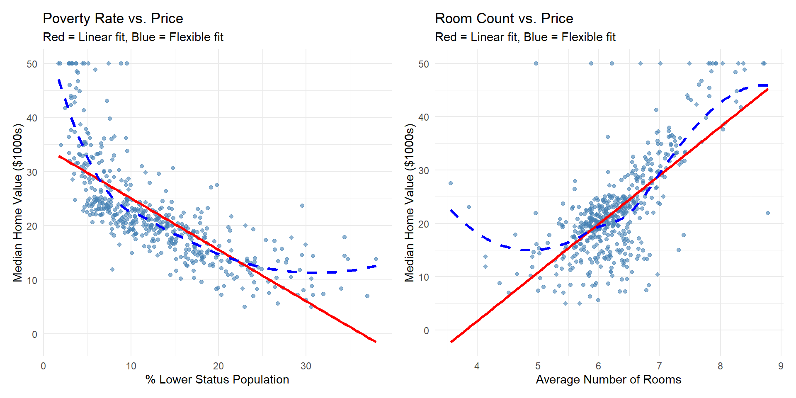

Chapter 02 – Part I
2025-09-24
Think of statistical learning like learning to predict based on patterns in data.
Simple Example: Predicting house prices based on size, location, age.
Data: \((X_1, X_2, \dots, X_p, Y)\) for \(i = 1, \dots, n\). - \(X_j\) are predictors (size, location, age of house) - \(Y\) is the response (house price)
Key Assumption: House price depends on at least one feature (size matters!)
Model: \(Y = f(X) + \varepsilon\) - \(f\) = the “true relationship” we want to learn - \(\varepsilon\) = random noise (things we can’t predict)
Statistical learning finds the best \(f\) using data
Two main reasons:
Real-world example: A bank wants to predict loan defaults (prediction) AND understand what factors cause defaults (understanding)
import pandas as pd
import matplotlib.pyplot as plt
import seaborn as sns
from sklearn.datasets import fetch_openml
# Load wage data (or similar dataset)
wage_data = pd.read_csv('wage_data.csv')
plt.figure(figsize=(10, 6))
sns.scatterplot(data=wage_data, x='age', y='wage', alpha=0.4)
sns.loess(data=wage_data, x='age', y='wage', color='red')
plt.title('Wage vs. Age')
plt.xlabel('Age')
plt.ylabel('Wage ($1000s)')
plt.show()What we see: - Wages increase with age until around 40-50 - Then wages level off or slightly decrease - Lots of variation at each age (the “noise”)
Business insight: Companies should expect to pay higher wages to experienced workers, but the premium levels off
Key Insight: More noise = harder to learn the pattern
Think of it like listening to music with background static - more static makes it harder to hear the song.
set.seed(123)
x <- seq(-2, 2, length.out = 100)
y_true <- sin(pi * x) # True relationship
y_low <- y_true + rnorm(100, 0, 0.2) # Low noise
y_high <- y_true + rnorm(100, 0, 1) # High noise
# Create comparison plots
library(patchwork)
p1 <- ggplot(data.frame(x=x, y=y_low), aes(x, y)) +
geom_point(color="steelblue") +
geom_line(aes(y=y_true), color="red") +
ggtitle("Low Noise - Easy to Learn")
p2 <- ggplot(data.frame(x=x, y=y_high), aes(x, y)) +
geom_point(color="steelblue") +
geom_line(aes(y=y_true), color="red") +
ggtitle("High Noise - Hard to Learn")
p1 + p2import numpy as np
import matplotlib.pyplot as plt
np.random.seed(123)
x = np.linspace(-2, 2, 100)
y_true = np.sin(np.pi * x)
y_low = y_true + np.random.normal(0, 0.2, 100)
y_high = y_true + np.random.normal(0, 1, 100)
fig, (ax1, ax2) = plt.subplots(1, 2, figsize=(12, 5))
ax1.scatter(x, y_low, alpha=0.7, color='steelblue')
ax1.plot(x, y_true, color='red', linewidth=2)
ax1.set_title('Low Noise - Easy to Learn')
ax2.scatter(x, y_high, alpha=0.7, color='steelblue')
ax2.plot(x, y_true, color='red', linewidth=2)
ax2.set_title('High Noise - Hard to Learn')
plt.tight_layout()
plt.show()Real Example: Predicting sales
Strategy: With high noise, collect MORE data or use simpler models
Question: Given data points, how do we draw the “best” line?
Answer: Different methods give different results!
# Method 1: Linear regression (straight line)
linear_fit <- lm(y ~ x, data = df)
# Method 2: Polynomial (curved line)
poly_fit <- lm(y ~ poly(x, 3), data = df)
# Method 3: LOESS (flexible curve)
df %>%
ggplot(aes(x, y)) +
geom_point() +
geom_smooth(method = "lm", color = "red") + # Linear
geom_smooth(method = "loess", color = "blue") + # Flexible
labs(title = "Different Methods, Different Results")from sklearn.linear_model import LinearRegression
from sklearn.preprocessing import PolynomialFeatures
from sklearn.pipeline import Pipeline
import numpy as np
# Linear regression
linear = LinearRegression()
linear.fit(x.reshape(-1,1), y)
# Polynomial regression
poly = Pipeline([
('poly', PolynomialFeatures(degree=3)),
('linear', LinearRegression())
])
poly.fit(x.reshape(-1,1), y)
# Plot results
plt.scatter(x, y)
plt.plot(x, linear.predict(x.reshape(-1,1)), 'r-', label='Linear')
plt.plot(x, poly.predict(x.reshape(-1,1)), 'b-', label='Polynomial')
plt.legend()
plt.show()Simple models (straight lines): - ✅ Easy to understand and explain - ❌ Might miss important patterns
Complex models (wiggly curves): - ✅ Capture complex patterns
- ❌ Hard to interpret, might overfit
Rule of thumb: Start simple, add complexity only if needed
Business Question: How much should we price this house?
import pandas as pd
from sklearn.linear_model import LinearRegression
from sklearn.datasets import load_boston
# Load Boston housing data
boston = load_boston()
df = pd.DataFrame(boston.data, columns=boston.feature_names)
df['price'] = boston.target
# Fit model: Price = f(poverty_rate, avg_rooms)
model = LinearRegression()
X = df[['LSTAT', 'RM']] # poverty %, avg rooms
y = df['price']
model.fit(X, y)
# Print coefficients
print(f"Room effect: ${model.coef_[1]:.2f}k per room")
print(f"Poverty effect: -${abs(model.coef_[0]):.2f}k per 1% increase")Actionable findings:
| Factor | Effect ($1000s) | Std Error | t-stat | p-value |
|---|---|---|---|---|
| Baseline Price | -1.36 | 3.1728278 | -0.4280953 | 0.669 |
| Poverty Rate Effect (%) | -0.64 | 0.0437315 | -14.6886992 | < 0.001 |
| Additional Room Effect | 5.09 | 0.4444655 | 11.4627299 | < 0.001 |
Key insight: Relationships aren’t always linear!
Business Implication: The poverty-price relationship is clearly non-linear! Linear models miss this pattern.
You have the “answer key”
Examples: - Predict house prices (have past sales) - Classify emails as spam (have labeled examples) - Forecast sales (have historical data)
Goal: Learn from examples to predict new cases
No “answer key” - find hidden patterns
Examples: - Group customers by behavior - Find market segments - Detect unusual transactions
Goal: Discover structure in data
# Unsupervised: Find customer segments
set.seed(2)
customer_data <- tibble(
spending = c(rnorm(50, 30, 10), rnorm(50, 80, 15)),
frequency = c(rnorm(50, 2, 1), rnorm(50, 8, 2))
)
# K-means clustering (finds groups automatically)
segments <- kmeans(customer_data, centers = 2)
customer_data$segment <- segments$cluster
# Plot results
ggplot(customer_data, aes(spending, frequency, color = factor(segment))) +
geom_point(size = 3) +
labs(title = "Customer Segments Found Automatically")from sklearn.cluster import KMeans
import matplotlib.pyplot as plt
# Generate customer data
spending = np.concatenate([np.random.normal(30, 10, 50),
np.random.normal(80, 15, 50)])
frequency = np.concatenate([np.random.normal(2, 1, 50),
np.random.normal(8, 2, 50)])
# Find segments
kmeans = KMeans(n_clusters=2)
segments = kmeans.fit_predict(np.column_stack([spending, frequency]))
# Plot
plt.scatter(spending, frequency, c=segments, cmap='viridis')
plt.xlabel('Average Spending')
plt.ylabel('Purchase Frequency')
plt.title('Customer Segments Found Automatically')
plt.show()Unsupervised learning reveals:
Key insight: Sometimes the most valuable discoveries come from data exploration, not prediction!
The key difference: What type of outcome are you predicting?
Predicting numbers - House prices: $150K, $200K, $175K - Sales volume: 1,000 units, 1,500 units
- Temperature: 25°C, 30°C, 22°C - Stock returns: +5%, -2%, +8%
Predicting categories - Email: Spam or Not Spam - Loan decision: Approve or Reject
- Customer: High/Medium/Low Value - Medical diagnosis: Disease A, B, or Healthy
# Classification example: High wage prediction
Wage <- Wage %>%
mutate(high_wage = ifelse(wage > 250, "High", "Low"))
# Logistic regression for classification
glm_fit <- glm(high_wage == "High" ~ age + education,
data = Wage, family = binomial)
# Get probabilities instead of just yes/no
pred_prob <- predict(glm_fit, type = "response")from sklearn.linear_model import LogisticRegression
from sklearn.preprocessing import LabelEncoder
# Create binary outcome
wage_data['high_wage'] = (wage_data['wage'] > 250).astype(int)
# Prepare data
le = LabelEncoder()
X = pd.DataFrame({
'age': wage_data['age'],
'education': le.fit_transform(wage_data['education'])
})
y = wage_data['high_wage']
# Fit classification model
clf = LogisticRegression()
clf.fit(X, y)
# Get probabilities
probabilities = clf.predict_proba(X)[:, 1] # Prob of high wageClassification is everywhere:
Key insight: Classification gives you actionable categories, regression gives you precise numbers
Central tension in ML: Accurate models are often hard to explain
Simple models you can explain - Linear regression - Decision trees (small ones) - Simple rules
When to use: - Regulatory requirements - Medical decisions
- Policy recommendations - Building trust
Complex “black box” models - Deep neural networks - Random forests (large) - Ensemble methods
When to use: - Image recognition - Recommendation systems - High-stakes prediction - When accuracy is paramount
Real-world examples: - Medical diagnosis: Need interpretable models (doctor must explain) - Netflix recommendations: Black box is fine (just works) - Credit scoring: Regulated industry needs interpretable models - Fraud detection: Accuracy matters more than explanation
Start with the business question: Do you need prediction or understanding?
Simple models first: Linear regression beats fancy algorithms if you need interpretation
Data quality matters more than algorithm choice: Clean data + simple model > messy data + complex model
Context is king: A 90% accurate model is useless if you can’t act on it
Validate everything: Your model is only as good as its performance on NEW data
Next steps: Learn to evaluate model performance and avoid common pitfalls
In future lectures, we’ll cover:
Homework preview: Apply these concepts to a real dataset from your country/region
Remember: Machine learning is a tool, not magic. Success comes from:
Understanding your business problem
Choosing the right approach
Validating your results
Communicating findings clearly
Questions? 🤔
ML in Economics | Zahid Asghar